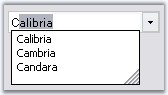
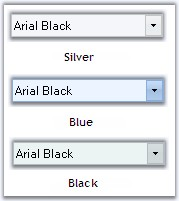

The below topics are discussed in this section.
The AutoComplete feature of the FontComboBox can be turned on\off depending upon the type of behavior, that is required for the FontComboBox control. The below properties enables the auto complete feature.
|
Properties |
Description |
|
UseAutoComplete |
Specifies whether auto complete feature is implemented in the control. |
|
AutoCompleteSource |
Specifies the source of the complete strings used for auto completion. DropDownStyle property should be set to "DropDown" to make this setting effective. |
|
AutoCompleteCustomSource |
Represents the collection of string for the custom source, when AutoCompleteSource is set to CustomSource. |
|
[C#]
// Enables AutoComplete feature. this.fontComboBox1.UseAutoComplete =true; this.fontComboBox2.AutoCompleteCustomSource.AddRange(new string[] { "Calibria", "Cambria", "Candara"}); this.fontComboBox2.AutoCompleteMode = System.Windows.Forms.AutoCompleteMode.SuggestAppend; this.fontComboBox2.AutoCompleteSource = System.Windows.Forms.AutoCompleteSource.CustomSource; |
|
[VB.NET]
' Enables AutoComplete feature. Me.fontComboBox1.UseAutoComplete = True Me.fontComboBox2.AutoCompleteCustomSource.AddRange(New String() {"Calibria", "Cambria", "Candara"}) Me.fontComboBox2.AutoCompleteMode = System.Windows.Forms.AutoCompleteMode.SuggestAppend Me.fontComboBox2.AutoCompleteSource = System.Windows.Forms.AutoCompleteSource.CustomSource |

Figure 588: AutoCompleteMode = "SuggestAppend"; AutoCompleteSource = "CustomSource"
See Also
FontComboBox has properties to control the appearance and behavior of the dropdown.
|
Properties |
Description |
|
DropDownStyle |
Specifies the style of the dropdown. The options are,
DropDownList - The user cannot directly edit the text portion. The user must click the arrow button to display the list portion, DropDown (default) - The user can directly edit the text portion. The user must click the arrow button to display the list portion, Simple - The text portion is editable. The list portion is always visible. |
|
DropDownHeight |
Specifies the height of the dropdown combo box in pixels. |
|
DropDownWidth |
Specifies the width of the dropdown combo box in pixels. |
|
MaxDropDownItems |
Indicates the maximum number of entries to display in the drop down list. |
|
[C#]
this.fontComboBox2.DropDownHeight = 107; this.fontComboBox2.DropDownStyle = System.Windows.Forms.ComboBoxStyle.DropDownList; this.fontComboBox2.DropDownWidth = 154; this.fontComboBox2.MaxDropDownItems = 10; |
|
[VB.NET]
Me.fontComboBox2.DropDownHeight = 107 Me.fontComboBox2.DropDownStyle = System.Windows.Forms.ComboBoxStyle.DropDownList Me.fontComboBox2.DropDownWidth = 154 Me.fontComboBox2.MaxDropDownItems = 10 |
Customizing DropDown Items
The height of the FontComboBox items is specified in ItemHeight property and sorting of the items is enabled through Sorted property.
|
[C#]
this.fontComboBox2.ItemHeight = 17; this.fontComboBox2.Sorted = true; |
|
[VB.NET]
Me.fontComboBox2.ItemHeight = 17 Me.fontComboBox2.Sorted = True |
The Office2007 visual style for the FontComboBox control can be enabled through below properties.
|
Properties |
Description |
|
VisualStyle |
Sets the visual style for the control. The options are,
Default (default value) and Office2007. |
|
Office2007ColorScheme |
Specifies the office color schemes. The color schemes are,
Blue, Silver and Black. |
|
[C#]
this.fontComboBox2.VisualStyle = Syncfusion.Windows.Forms.Tools.ThemedComboBoxStyles.Office2007; this.fontComboBox2.Office2007ColorTheme = Syncfusion.Windows.Forms.Office2007Theme.Silver; |
|
[VB.NET]
Me.fontComboBox2.VisualStyle = Syncfusion.Windows.Forms.Tools.ThemedComboBoxStyles.Office2007 Me.fontComboBox2.Office2007ColorTheme = Syncfusion.Windows.Forms.Office2007Theme.Silver |

Figure 589: Office2007 Color Schemes for the FontComboBox Control
Custom Colors
We can also apply custom colors to the FontComboBox control by setting Office2007ColorTheme to "Managed" and specifying the custom color through the ApplyManagedColors method as follows.
|
[C#]
this.fontComboBox2.Office2007ColorTheme = Syncfusion.Windows.Forms.Office2007Theme.Managed; Office2007Colors.ApplyManagedColors(this, Color.Orchid); |
|
[VB.NET]
Me.fontComboBox2.Office2007ColorTheme = Syncfusion.Windows.Forms.Office2007Theme.Managed; Office2007Colors.ApplyManagedColors(Me, Color.Orchid) |
Figure 590: Custom Color = "Orchid"